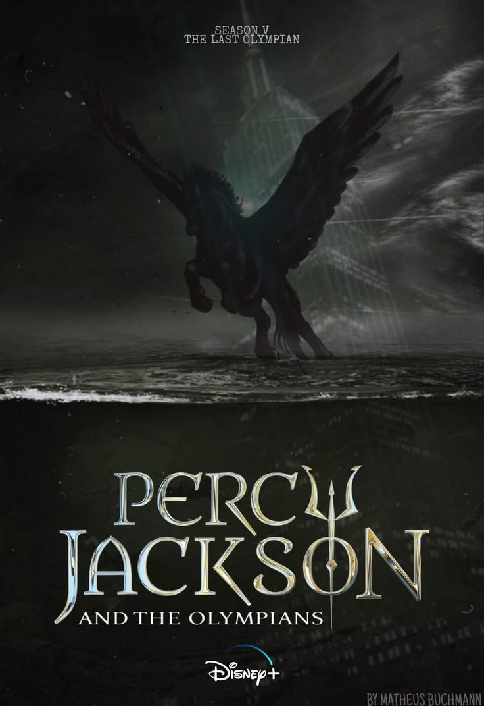

¡Nuevo Teaser de la Segunda Temporada!
Se ha revelado un nuevo Teaser de la segunda temporada, vealo aqui:
Se ha revelado un nuevo Teaser de la segunda temporada, vealo aqui:
Rick Riordan ha anunciado su próxima novela que expandirá aún más la historia de Nico Di Angelo (hijo de Hades) y Will Solace (hijo de Apolo). La continuación de: La Profecía del Rayo y las Estrellas. ¡Prepárate para nuevas aventuras!
La exitosa serie de Disney+ regresa con una confirmación de la tercera temporada. Tras el anuncio de la segunda temporada, los fans pidieron más detalles, logrando la confirmación de esta tercera temporada. La cual adaptara el tercer libro de la saga, mostrandonos a Percy y otros nuevos personajes en una nueva aventura y problemas. ¡No te la pierdas!
